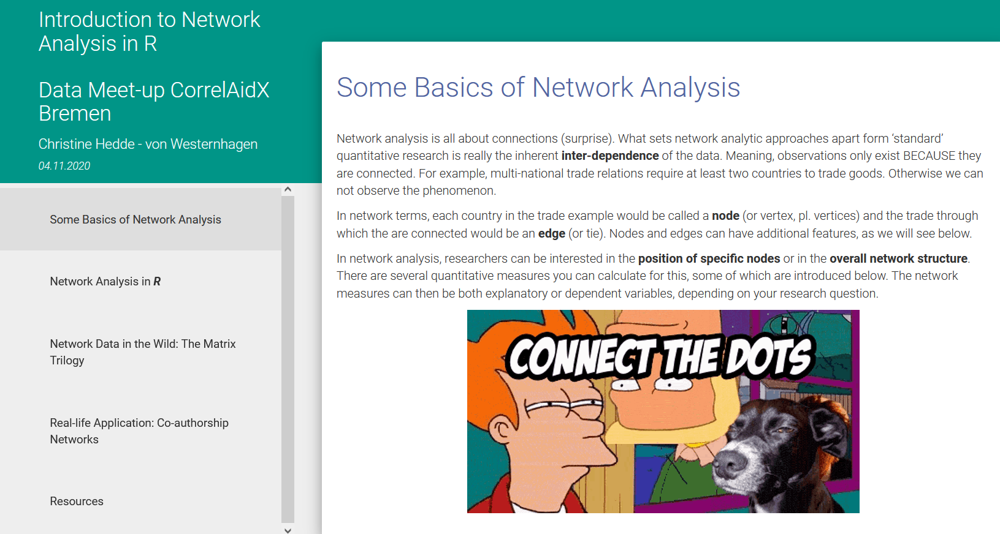
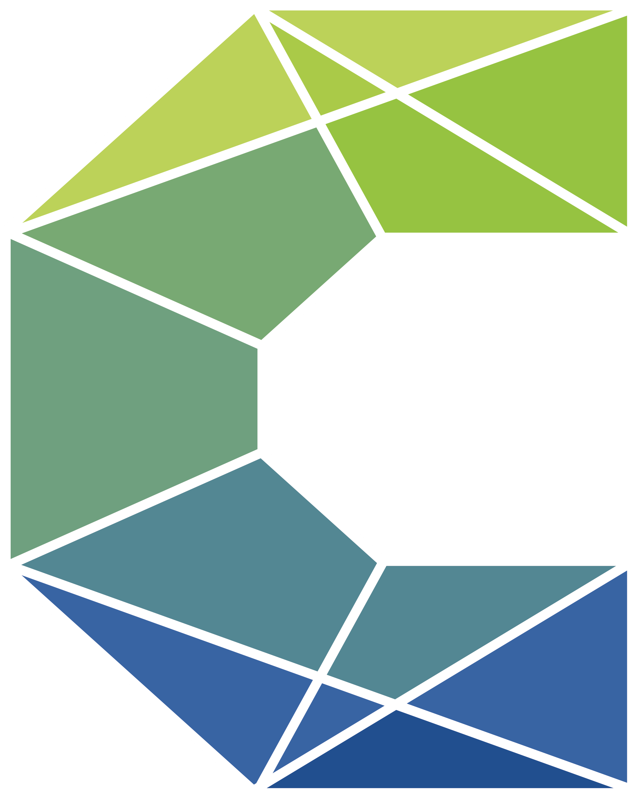

Showcase
Master thesis: Predicting Covid-19 outbreaks using multi-layer centrality measures


In my thesis project, I leverage a multi-layer network framework to model and predict the spread of Covid-19 in the Dutch population. Specifically, I focus on the predictive ability of multi-layer centrality measures.
Mapping Missions: New Data for the Study of African History
- Article: Hedde-von Westernhagen, C., & Becker, B. (2022). Mapping Missions: New Data for the Study of African History, Research Data Journal for the Humanities and Social Sciences, 7(1), 1-33. doi: https://doi.org/10.1163/24523666-bja10027
- Dataset: https://doi.org/10.7910/DVN/E9EEMQ


This project originated from my Bachelor thesis. After digitizing a new map on the locations of Christian mission stations in Africa, we investigated how this map differs from the commonly used sources in historical social research. You can find a synthesis of the findings in this Twitter thread.
CorrelAid Workshop: Tidy Network Analysis in R and Python


As a data science volunteer for the NGO CorrelAid , I gave a workshop on network analysis in R (and Python) to my peers. I focused on packages and workflows from the tidyverse, and also implemented the workshop presentation itself using rmarkdown.
Co-authorship network of the SOCIUM research center
Data collection
During my Bachelor’s at the University of Bremen, I assembled a dataset of co-authorship relations within the local social science institute SOCIUM.
Working paper

As part of a summer school course at Radboud University Nijmegen, I returned to this dataset for the implementation of a temporal exponential random graph model (TERGM). I try to explain the temporal emergence of the co-authorhsip network over 10 years, using author attributes and internal network measures.
TidyTuesday


I have participated in several TidyTuesday events to experiment with visualization in ggplot2. View here, here, and here .